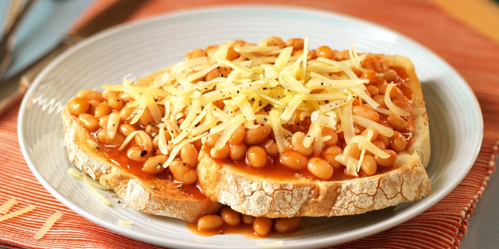
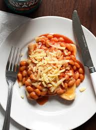

Beans on Toast

Description
Beans on toast has been eaten for years every day in the UK for breakfast, lunch and dinner. Its a super simple dish, but its comfort food on a plate for many of us.
Ingredients

- Bread
- Beans
- Cheese
- Butter
- Sauce (optional)
Steps
- Put Bread in toaster
- Put Beans on the hob
- Butter toast once done in toaster
- Pour beans onto the toast once warmed through
- Enjoy